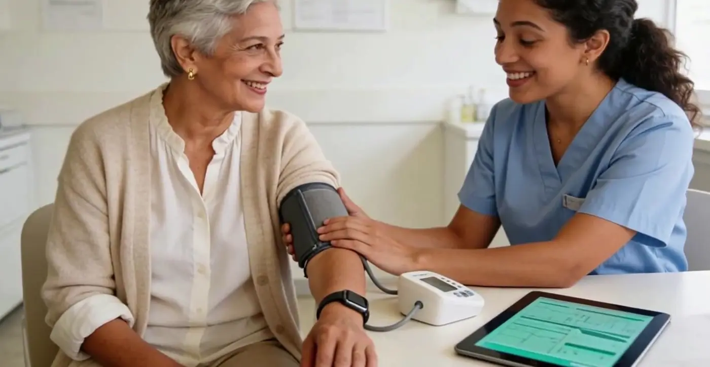
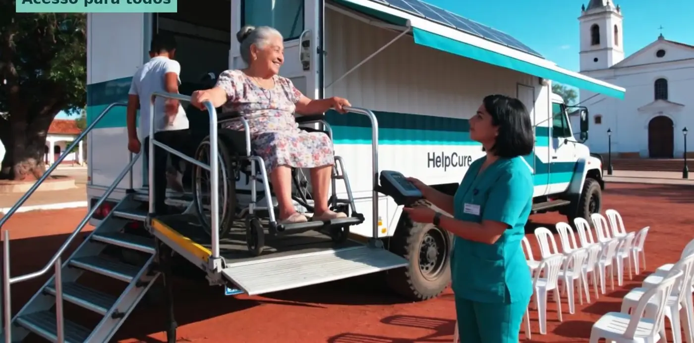

Cada paciente comparado com ele mesmo.
O Help Cure acompanha sinais vitais, medicamentos e histórico de cada pessoa e avisa quem cuida quando algo foge do padrão dela — não de uma média.
Você cuida da saúde das pessoas. O Help Cure ajuda você.
Em menos de 2 minutos, veja as atividades que o Help Cure acompanha e controla por você.
Conheça todas as funções do Help Cure.
Veja como ele pode ajudar você: do pulso do paciente à central de monitoramento, do consultório ao hospital, da farmácia à casa.
Todo dia, milhares de pacientes precisam contar a própria história do zero.
Exames ficam espalhados, a receita se perde, o remédio é esquecido e o sinal de alerta só aparece quando a pessoa já está no pronto-socorro.
O Help Cure junta essas informações num só lugar, acompanha o paciente entre uma consulta e outra e entrega à equipe de saúde um resumo pronto quando ela precisa.

Do pulso do paciente à decisão de quem cuida.
Coleta
Pulseira, relógio, cartão com chip ou o kit de triagem registram pressão, frequência cardíaca, oxigenação, temperatura e outros sinais. Receitas e diagnósticos entram por foto.
Assinatura pessoal
O motor RAPP aprende o padrão de cada paciente e compara cada nova leitura com esse padrão, olhando desvio, tendência e a relação entre os sinais.
Central de monitoramento
Desvios viram alertas por nível de prioridade, com o histórico do paciente ao lado, para a equipe responsável decidir.
Cuidado
Médico, farmácia, família e o próprio paciente recebem a informação certa, na hora certa, pelo app, pelo painel ou pelo WhatsApp.
Uma plataforma, todos os pontos de cuidado.
Cada ponto de atendimento alimenta o mesmo histórico do paciente. Escolha uma solução para ver como ela funciona.

Paciente e família
App, lembretes de remédio e resumo de emergência no bolso.
Saiba mais →
Hospital e clínica
Sinais vitais direto no sistema e a família informada.
Saiba mais →
Farmácia
Receita, dispensação e adesão ao tratamento no mesmo histórico.
Saiba mais →
Home care
O cuidado continua em casa depois da alta.
Saiba mais →
Célula de atendimento
Sala de 9 m² com triagem e teleconsulta, onde as pessoas estão.
Saiba mais →
Unidade móvel
Célula de atendimento em contêiner de 20 pés, sobre um caminhão 4x4.
Saiba mais →Dados clínicos tratados com o cuidado que exigem.
Laudos com assinatura digital e carimbo do tempo, integração com o prontuário único público no padrão exigido e proteção de dados conforme a LGPD no Brasil e a lei de dados pessoais do Paraguai.

Quem ganha com o Help Cure.
Pacientes e famílias
Menos esquecimento, mais segurança e a família por perto, mesmo à distância.
Hospitais, clínicas e médicos
O paciente chega com o histórico pronto e continua acompanhado depois da alta.
Governos e planos de saúde
Prevenção no lugar de urgência: a população acompanhada todos os dias, com dados para decidir.

Ajude a levar cuidado a quem mais precisa.
Nossa campanha financia unidades móveis com atendimento gratuito em comunidades carentes do Paraguai e do Brasil, e o desenvolvimento da plataforma. Quem apoia acompanha cada atendimento e pode receber o kit Help Cure em casa.
Piloto no Paraguai e no Brasil.
Estamos começando com um grupo de pacientes reais: receita por foto, lembretes pelo app e pelo WhatsApp e acompanhamento por uma central de monitoramento.